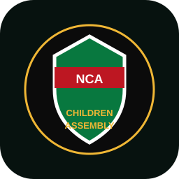

The Chamber
Understand the Assembly, its purpose, participation pathways and how children's voices can move through civic discussion.
Enter chamber →
Kenya Children AssemblyNCA • Sauti Yako • Your VoiceA modern public platform for the Kenya Children Assembly — bringing Assembly leadership, representation, sessions, motions, county voices, rights and resources into one place.
The experience is organized around Assembly work: who represents children, what is being discussed, what decisions are recorded, when sessions happen and how children can participate.
Understand the Assembly, its purpose, participation pathways and how children's voices can move through civic discussion.
Enter chamber →Give motions, questions, resolutions, statements and committee work a clear public home.
View business →Build a verified county-by-county representation directory so the national platform remains connected to local voices.
Explore counties →Designed to feel like a civic institution online: structured, transparent, accessible and centered on children's participation.
Present public Assembly sessions, approved agendas, questions, motions and outcomes in a format that children and the public can understand.
A future connected backend can turn this into the Assembly's public business desk. For now, these are clearly marked platform modules ready for verified content.
Publish approved motions, resolutions, sponsors, status and follow-up.
Give children's concerns a structured public route into civic discussion.
Make approved session records and summaries searchable and accessible.
Track public mandates, reports, recommendations and completed actions.
This platform separates public Assembly information from private safeguarding data. Verified records can be published; sensitive reports should only be handled through a secure, access-controlled backend.
A dedicated directory for verified national and county Assembly leadership, with roles and public responsibilities.
The live system can connect this area to verified Assembly records. Until then, the interface avoids inventing names, offices or contact details.
Use the directory to discover county participation once verified Assembly records are connected.
A national directory structure ready for verified county representatives and Assembly activity.
A verified calendar for plenaries, forums, civic learning and public Assembly announcements.
Reserved for verified session dates, agenda and public outcomes.
Reserved for verified participation opportunities and notices.
Reserved for verified civic education and Assembly learning activities.
Search public learning materials by Assembly topic.
A simple guide to ideas, debate, decisions and follow-up.
Explore →Plain-language concepts for understanding rights and responsibilities.
Explore →Communication, teamwork, listening and responsible leadership prompts.
Explore →Practical reminders for respectful, safe and inclusive participation.
Explore →The Assembly platform connects civic participation with protection, education, wellbeing and the right to be heard.
Safety, dignity and protection from abuse and exploitation.
Information and opportunities to learn, grow and participate.
Children's views should be heard and considered in matters affecting them.
Care, health, inclusion and environments where children can thrive.
This public interface does not transmit sensitive reports. A production safeguarding workflow should use verified identities, strict access controls, clear escalation procedures and appropriate data protection.